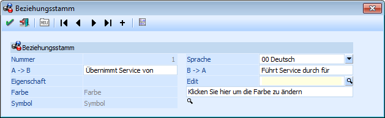
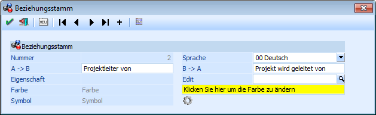
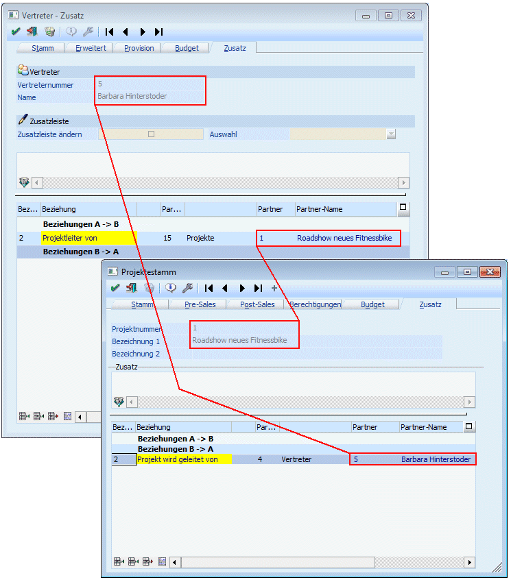

Im Beziehungsstamm, der über den Menüpunkt…
1 WinLine START
1 Optionen
1 Beziehungsstamm
… aufgerufen werden kann, können Beziehungen definiert werden. Diese Beziehungen können in weiterer Folge bei den Stammdatenbereichen
ü Personenkonten
ü Kontakte
ü Vertreter
ü Projekte
hinterlegt werden.

Ø Nummer
Die Nummer wird durch das Programm automatisch vergeben.
Hinweis
Eine neue Beziehung kann wie folgt angelegt werden:
ü Anwahl des Buttons "Zur Letzten Belegzeile"
ü Anwahl des Buttons "Neuen Datensatz anlegen"
Ø Sprache
Aus der Auswahlliste kann die Sprache ausgewählt werden, für welche die Beziehung gelten soll.
Ø A -> B
Hier wird die Bezeichnung der Beziehung aus der Sicht von A eingetragen (z.B. "Projektleiter von", "Kunde von" etc.)
Ø B -> A
Hier wird die Bezeichnung der Beziehung aus Sicht von B hinterlegt (z.B. "Projekt wird geleitet von", "Lieferant von" etc.).
Beispiel
Beziehung A -> B = Projektleiter von
Beziehung B -> A = Projekt wird gleitet von
Beim Projekt wird die Beziehung B -> A hinterlegt, wobei als "Partner" z.B. ein Vertreter hinterlegt wird.
Beim Vertreter ist dann automatisch die Beziehung A -> B eingetragen, wo dann als "Partner" das Projekt ausgewiesen wird.


Ø Edit
An dieser Stelle kann über die Matchcodefunktion ("Lupen"-Symbol oder Taste F9) eine Eigenschaft gewählt werden, welche der Beziehung zugeordnet werden soll.
Ø Farbe
Durch einen Doppelklick auf den Text "Klicken Sie hier um die Farbe zu ändern" kann die Farbe gewählt werden, mit welcher die Beziehung in den Stammdatenfenstern angezeigt werden soll.
Ø Symbol
Durch einen Klick auf die kleine Lupe neben dem Text "Symbol" kann aus dem aufgehenden Fenster "Symbole" ein Icon per Doppelklick gewählt werden. Dieses Icon wird in den Stammdatenfenstern angezeigt und z.B. beim Beziehungsjournaldruck als Kennzeichen mit ausgegeben wird.
Buttons
Ø  Ok
Ok
Durch Anklicken des "Ok"-Buttons oder der Taste F5 wird die Beziehung gespeichert.
Ø  Ende
Ende
Durch Drücken des Buttons "Ende" oder der ESC-Taste wird der Programmbereich geschlossen und alle noch nicht gespeicherten Änderungen verworfen.
Ø Neuen Datensatz anlegen
Durch Anwahl des Buttons "Neuen Datensatz anlegen" kann eine neue Beziehung angelegt werden.
Ø VCR-Buttons
Über die so genannte VCR-Buttonleiste kann durch Mausklick zwischen den Datensätzen geblättert werden.
ü  Damit kann der erste Datensatz angesprochen werden.
Damit kann der erste Datensatz angesprochen werden.
ü Damit kann der vorherige Datensatz angesprochen werden.
ü Damit kann der nächste Datensatz angesprochen werden.
ü  Damit kann der letzte Datensatz angesprochen werden.
Damit kann der letzte Datensatz angesprochen werden.
ü Damit wird die nächste freie Nummer für die Neuanlage gesucht.
Ø Beziehungsstammliste
Durch Anklicken des Buttons "Beziehungsstammliste" wird eine Liste aller bereits angelegten Beziehungen samt allen Einstellungen am Bildschirm ausgegeben.